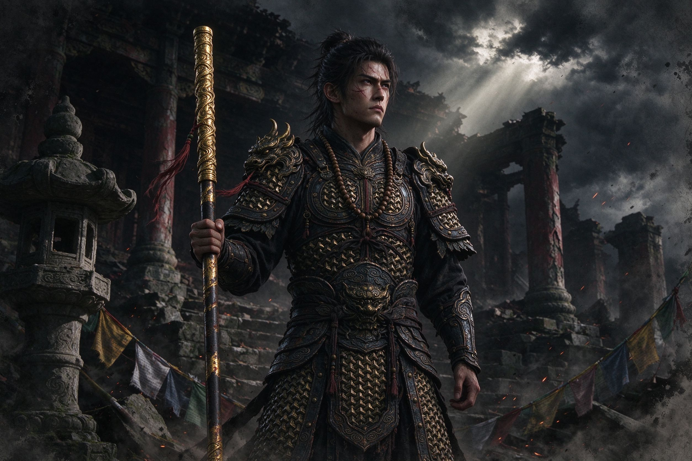
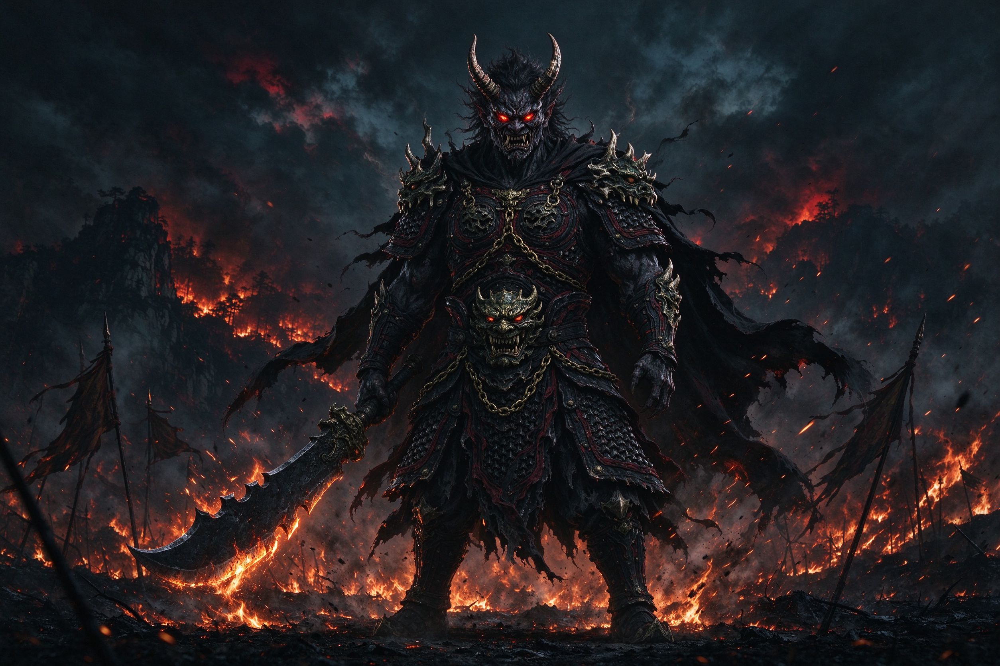
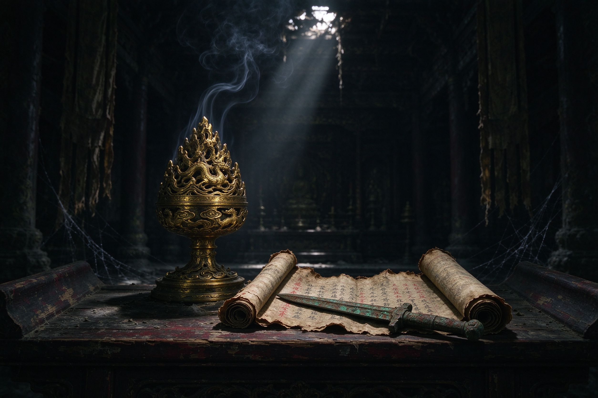

向下 · 入此山
壹 · 序章
山火未尽，西行未止
“
大荒之西，有山名烬。山火焚了三百年，有人持棍走过三百年。
没有人知道他在找什么，只记得他腰间的念珠，一颗一颗，被火舌舔得发亮。
若你愿听，故事便从第一颗念珠讲起。
—— 山门外说书人
贰 · 特色
一棍破万法
棍法百变
轻重棍势、识破弹反、棍花流转。一棍起落之间，自成天地，快慢皆由你心。
妖物横生
山精、妖将、堕佛各踞一方。斩尽不难，难的是听懂它们身前身后的旧事。
山河秘境
古庙残垣、焦土荒原、洞天深处。机关暗藏于云雷纹与断碑之下，步步有因。
执念为引
每一次轮回都留下余烬，每一条支线都在追问：行者要找的，究竟是什么。
叁 · 角色
烬火中相遇的众生

主角 · 行者
沉默的执棍人
甲胄斑驳，念珠磨亮，不问来处，只向西行。

妖将 · 赤角
荒原的旧主
他曾是边关守将，如今守着焦土与一座空城。

秘辛 · 古殿
供案三物
博山炉、残经、锈剑，拼凑着烬火山的半段往事。
肆 · 西行之路
三十三日的烬火
第一日
山门 · 初行
自故土起身，踏过第一道焦土山门，身后传来旧城的钟声。
第七日
荒原 · 妖潮
妖潮如云压境，赤角立于阵前，问来者何人、所为何求。
第十九日
古庙 · 残经
残经半卷，朱砂褪色，炉灰里埋着一截旧事，剑锈处写着故人姓名。
第三十三日
天光 · 烬火
云隙天光倾落，行者抬头，棍端灯笼将熄未熄——山火，原是心中火。